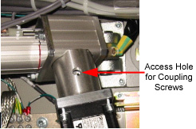
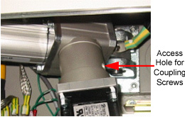
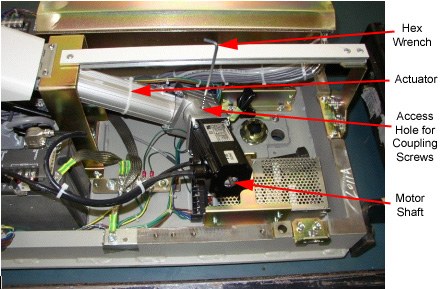

Operating Documentation
Direction 5193855-800, Rev# 4
LS 5.X RT Ltd. Access Service Information Adv
Operating Documentation |
| Required Persons | Preliminary Reqs | Procedure | Finalization |
|---|---|---|---|
| 1 | Timing Not Applicable | 30 mins | Timing Not Applicable |
Procedure Effectivity:
| Assembly: | TABLE |
| Subassembly: | Lower Table Assembly |
| Purpose: | Tighten Motor Coupling Screws |
| Last Revised: | May 2004 |
| Item | Qty | Effectivity | Part# | Manufacturer | |
|---|---|---|---|---|---|
| 5/64 inch hex wrench (L-shaped) | 1 | - | - | - | |
| NOTE: | The motor coupling screws of the old type actuator can be loosened, during table upward/downward operation of some period, resulting in inability of upward/downward operation. This procedure will prevent this, by re-tightening the screws. |
| NOTE: | This procedure is not required on tables with a new type actuator. See Illustration 1 and Illustration 2 to distinguish the actuator type. As shown, on the old type, the access hole faces in the approximately vertical direction to the actuator rod. |
Illustrations for the Old and the New type Actuators are shown below:
Illustration 1: Old Type Actuator

Illustration 2: New Type Actuator

Remove the Gantry right side cover.
Turn off 120VAC on the Service Switch Panel.
Remove the table right Base Cover, and then the left Base Cover.
Locate one coupling (hex) screw through the access hole, turning the motor shaft, using a socket wrench. See Illustration 3.
Illustration 3: Locating Hex Screw and Turning Motor Shaft

Insert the longer rod of the 5/64 inch wrench to the screw.
Tighten the screw, turning the shorter rod of the wrench by hand. Tighten firmly, but avoid over-tightening.
Tighten another screw, after locating it by turning the motor shaft. (There are two coupling screws used.)
Reinstall the Base Covers.
No finalization required.